Contents
% CS 736: Assignment 4 % Date: April 3, 2016 % Authors: Niranjan Thakurdesai, Ayush Baid clc; clear; close all;
Loading image
load('../data/assignmentSegmentBrain.mat'); imgSize = size(imageData); % Show corrupted image figure() imshow(imageData) title('Corrupted image')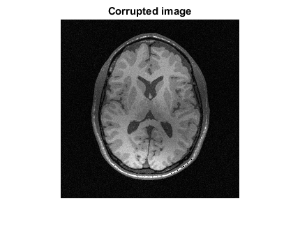
Initialize class means and memberships
% Using k-means for label initialization % Motivation is that it gives quick division of the values into 3 classes K=3; % Number of segments validImage = imageData(logical(imageMask)); [~,cInit] = kmeans(validImage,K); % Once we have the initial class means, we perform binary membership % assignment at each pixel in which the membership corresponding to the % closest class mean is assigned 1 and the rest are assigned 0. This gives % a close approximation to the actual memberships uInit = zeros(imgSize(1),imgSize(2),K); for i=1:imgSize(1) for j=1:imgSize(2) if(imageMask(i,j)>0) t = [imageData(i,j);imageData(i,j);imageData(i,j)]; [~,I] = min(abs(t-cInit)); uInit(i,j,I) = 1; end end end
Defining parameters and neighbourhood mask
q = 1.6; % Fuzziness parameter bInit = ones(imgSize).*imageMask; % Bias field; initially chosen to be a constant intensity image % Create neighbourhood mask windowSize = 10; w = fspecial('gaussian', windowSize); % Algorithm parameters maxIters = 20; J = zeros(maxIters,1); % Objective function across iterations
Modified FCM
y = imageData.*imageMask; u = uInit; c = cInit; b = bInit; for i=1:maxIters u = memberships( w,y,c,b,imageMask,K,q ); % Keeping class means and bias fixed, update memberships c = classMeans( u,imageData,w,b,q,K); % Keeping memberships, multipliers and bias fixed, update class means b = bias( w,imageData,u,c,K,q ); % Keeping memberships, multipliers and class means fixed, update bias b(~logical(imageMask))=0; J(i) = objEval( imageData,w,c,b,u,q,K ); % Evaluate objective function in the current iteration fprintf('Value of the objective function at iteration %d = %f \n',i,J(i)); end
Value of the objective function at iteration 1 = 0.161735 Value of the objective function at iteration 2 = 0.106530 Value of the objective function at iteration 3 = 0.095837 Value of the objective function at iteration 4 = 0.090521 Value of the objective function at iteration 5 = 0.088369 Value of the objective function at iteration 6 = 0.084542 Value of the objective function at iteration 7 = 0.079527 Value of the objective function at iteration 8 = 0.077301 Value of the objective function at iteration 9 = 0.073780 Value of the objective function at iteration 10 = 0.069993 Value of the objective function at iteration 11 = 0.065701 Value of the objective function at iteration 12 = 0.061982 Value of the objective function at iteration 13 = 0.061287 Value of the objective function at iteration 14 = 0.060606 Value of the objective function at iteration 15 = 0.058715 Value of the objective function at iteration 16 = 0.056449 Value of the objective function at iteration 17 = 0.055920 Value of the objective function at iteration 18 = 0.055913 Value of the objective function at iteration 19 = 0.054949 Value of the objective function at iteration 20 = 0.054532
Show required images
Showing optimal class membership image estimates
figure() imshow(u(:,:,1)) title('Optimal class membership image estimate 1') figure() imshow(u(:,:,2)) title('Optimal class membership image estimate 2') figure() imshow(u(:,:,3)) title('Optimal class membership image estimate 3') % Showing optimal bias-field image estimate figure() imshow(b) title('Showing optimal bias-field image estimate')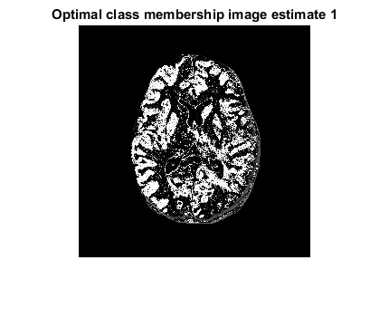 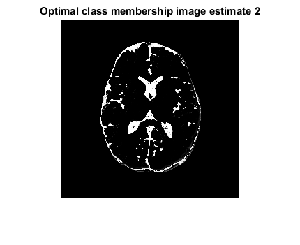 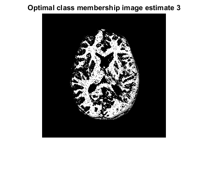 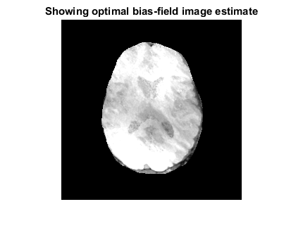
Construct bias-removed image
A = zeros(imgSize); for i=1:K A = A + u(:,:,i)*c(i); end A = A.*imageMask; % Show bias-removed image figure() imshow(A) title('Bias-removed image')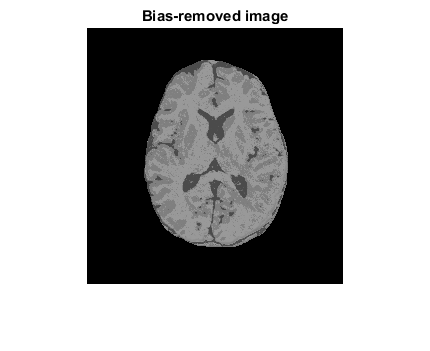
Construct residual image
R = imageData - A.*b; % Show residual image figure() imshow(R) title('Residual image')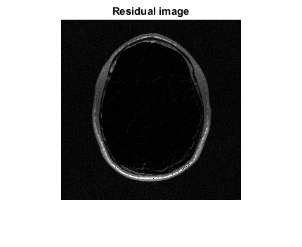
Report parameters and initial estimates
fprintf('q = %f \n',q); % Show neighbourhood mask figure() imagesc(w) title('Neighbourhood mask') % Show initial estimates for the membership values figure() imshow(uInit(:,:,1)) title('Initial class membership image estimate 1') figure() imshow(uInit(:,:,2)) title('Initial class membership image estimate 2') figure() imshow(uInit(:,:,3)) title('Initial class membership image estimate 3') fprintf('The initial estimates for the class means are [%f %f %f] \n',cInit(1),cInit(2),cInit(3)); fprintf('The optimal estimates for the class means are [%f %f %f] \n',c(1),c(2),c(3));
q = 1.600000 The initial estimates for the class means are [0.453122 0.224159 0.634161] The optimal estimates for the class means are [0.498997 0.293478 0.601072]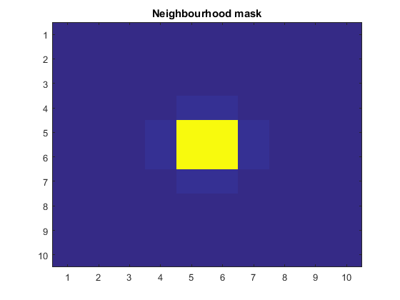 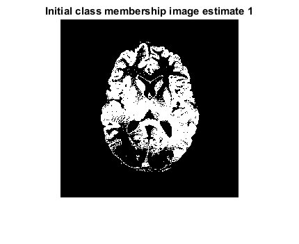 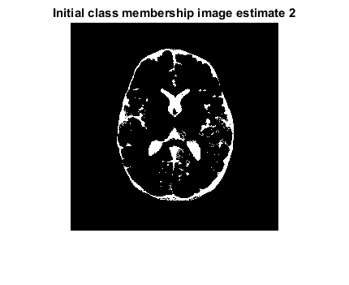 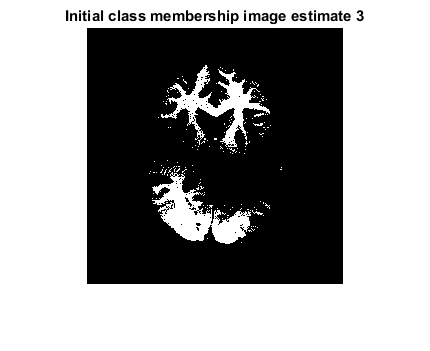